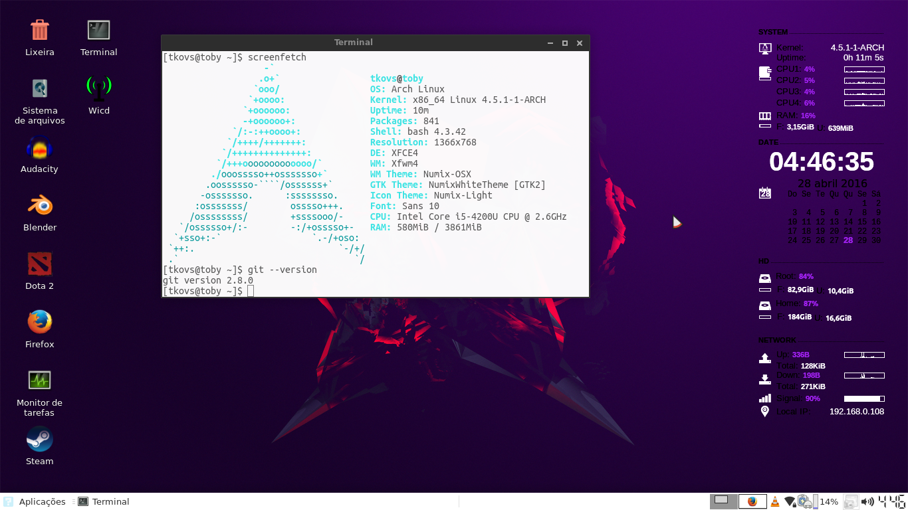
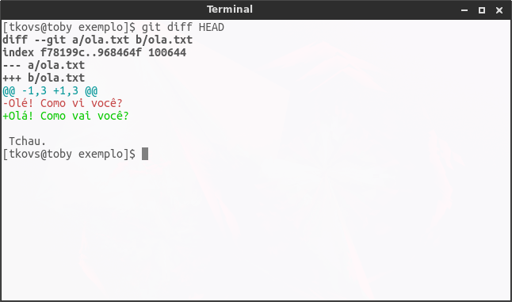
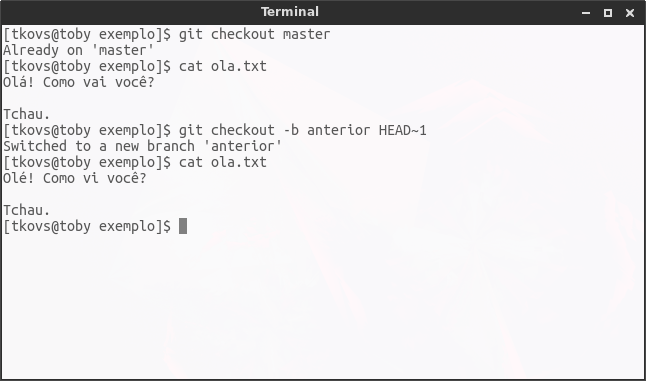
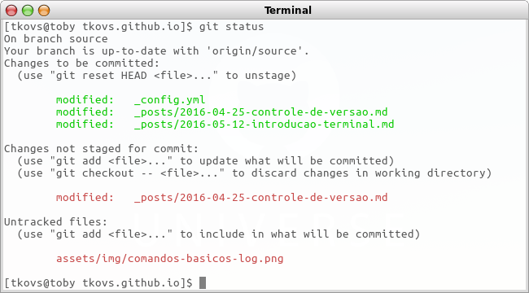
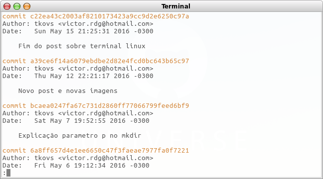

Versionamento e iniciando no Git! (em progresso)
Tabela de conteúdo
- Introdução
- Versionamento
- Plataforma
- Git
- Instalação do Git
- Configurando seu usuário no git
- Comandos básicos
- Demonstração prática
Introdução
No decorrer do texto será abordado alguns temas importantes sobre versionamento, seguido de um tutorial usando o Git no terminal.
Versionamento
Versionamento é como chamamos o ato de gerenciar diferentes versões de um mesmo arquivo, cada uma com um id de identificação - geralmente um número.
Por experiência própria já vi muitos colegas - até mesmo professores - usarem um método de versionamento muito manual: a cada versão do projeto toda a pasta era salva para um backup em que o nome era a data ou o número da versão, fazendo com que todos arquivos que não foram alterados fossem replicados e pesando muito, além de não ter recursos fundamentais que um sistema de controle de versão tem.
Nesse artigo mostrarei o Git que é um sistema de controle de versão muito usado e exigido por empresas, além de ser fácil de usar e estar em constante atualização e crescimento. id-plataforma
Plataforma
Independente da plataforma que você atue, há sistemas de controle de versão para Linux, Mac OS X, Windows, Solaris e o que mais houver. Sempre haverá implementações de softwares com esse objetivo em diferentes linguagens, tanto privados quanto de código aberto.
Pessoalmente eu uso o Git no Arch Linux. Minha área de trabalho: 
Git
Git é uma ferramenta escrita em C, de código aberto, que foi desenvolvida pra ser o sistema de controle de versão do Linux. Hoje o Git é amplamente utilizado e é de fundamental importância conhecê-lo. Pessoalmente, eu o utilizo para desenvolvimento de jogos, modelagem e texturização e animação 3D, projetos de programação, trabalhos de escola, textos aleatórios, arquivos de configuração do linux. Gerencio tudo isso da forma fácil e prática que o Git oferece e propõe, pois tudo acontece localmente sem necessidade de internet e seu funcionamento é simples para o usuário.
Seu funcionamento se dá, pra início de conversa, com um comando inicial numa pasta. A partir daí, todo arquivo que for copiado ou criado nessa pasta está sob controle do Git, com algumas exceções.
A seguir, será demonstrado alguns dos recursos oferecidos pelo Git, e mais a frente um tutorial.
Escolher quais arquivos estão sob versionamento
Embora o controle de versão do Git gerencie uma pasta específica, você decide quais arquivos dentro dessa pasta estão sob o controle desse sistema. Logo, não é porque um arquivo está dentro dessa pasta que ele vai sofrer o tracking do Git - tracking é só a supervisão, o policiamento do Git sobre algo.
Definir uma nova versão
A cada vez que você altera arquivos, uma nova versão deles está sendo criada teoricamente falando, mas para que os arquivos que estão sobre o controle do Git sejam salvos numa nova versão é necessário fazer um commit dos arquivos. Ao se executar um commit, você precisa fornecer uma mensagem descrevendo a nova versão. Na mensagem, você pode dizer, de modo geral, o que foi alterado e porque as alterações foram feitas. Isso é importante pois após vários commits pode-se listar todos com as descrição sendo exibida, então você tem algo como uma linha do tempo no projeto.
Comparação de versões
Após ter mais de 1 versão do projeto gerenciado pelo Git, você pode comparar versões através do diff. O resultado é a mostra de todas as linhas que foram alteradas.
A seguir há duas versões de um mesmo arquivo, e posteriormente a forma como o git mostra a diferença entre essas duas versões.
Primeira versão:
Olé! Como vi você?
Tchau.Segunda versão:
Olá! Como vai você?
Tchau.Resultado da execução do diff entre as duas versões: 
Navegação entre versões
Embora você passe a esmagadora maioria do tempo navegando no seu projeto em seu estado atual, você pode visita-lo a qualquer momento em que um commit foi feito. No exemplo abaixo, o comando cat exibe o conteúdo de um arquivo. Usando o comando cat duas vezes no mesmo arquivo ele mostra conteúdo diferente, mas por quê? Porque entre as duas execuções o projeto foi alterado pra versão anterior, então todos os arquivos foram alterados pro estado que estavam no commit anterior.

Ramificações
Quando você precisar fazer alterações no projeto, mas quiser manter uma cópia segura, não precisa copiá-lo para algum lugar como um backup. Quando quiser adicionar um novo recurso, ou alterar um arquivo sem riscos de corromper o projeto atual e ter dificuldades de reverter para o estado em que funcionava, você não vai precisar salvar uma cópia do seu projeto como backup. Ao invés de um backup, o Git cria uma ramificação do projeto em paralelo à ramificação principal para que se trabalhe em linhas diferentes. Elas são independentes e podem simplesmentes não se unirem no futuro. Ao se finalizar as alterações necessárias, o Git faz o merge de duas ramificações, que adiciona as alterações de uma ramificação em outra, dando a você controle total sobre o projeto e as alterações feitas. E é claro, a qualquer momento você pode navegar por diferentes ramificações, que no git são chamadas de branches.
O branch principal de um projeto, que é criado logo na inicialização do Git em um diretório, é o branch master.

Gerenciando vários contribuidores num mesmo projeto
Usando o merge, diferentes pessoas podem trabalhar num mesmo projeto de modo organizado, cada um com sua ramificação própria atrás de um fim específico, desse modo ao não trabalharem num mesmo arquivo a junção das alterações é feita rapidamente sem problemas. Caso você tente juntar diferentes versões de um arquivo, com problemas de compatibilidade, o Git avisa quais são os dados que estão entrando em conflito e aí fica por sua conta quais dados terão prioridade sobre outros no resultado final.
Instalação do Git
Faça o download do Git para o seu sistema operacional seguindo os passos no próprio site da ferramenta. A instalação é muito simples e leva pouco tempo, além de ter muitos tutoriais na internet ensinando a fazê-lo.
Configurando seu usuário no git
Após instalar, abra o terminal. Se você executar git --version, e não obtiver a versão do git, algo
deu errado na instalação, mesmo que seja a adição do git no $PATH do seu sistema operacional.
Quando fizer commits, seu email fica atrelado a ele, então você precisa informar ao Git seu nome e seu email. Isso também se faz necessário para se conectar ao Github, mas deixarei isso para outro artigo.
Seu usuário
$ git config --global user.name "seu nome de usuário"
$ git config --global user.email "seu email"Seu editor
$ git config --global core.editor "seu editor de texto"E para verificar se está tudo certo, execute o comando abaixo. No meu notebook o resultado foi esse:
$ git config -l
user.email=victor.rdg@hotmail.com
user.name=tkovs
core.repositoryformatversion=0
core.filemode=true
core.bare=false
core.logallrefupdates=true
remote.origin.url=git@github.com:tkovs/tkovs.github.io.git
remote.origin.fetch=+refs/heads/*:refs/remotes/origin/*
branch.master.remote=origin
branch.master.merge=refs/heads/master
branch.source.remote=origin
branch.source.merge=refs/heads/sourceComandos básicos
Se nunca usou o terminal ou ainda tem dificuldades, sugiro que leia minha postagem sobre ele.
Pra executar um comando do Git no terminal, digite git seguido pelo comando. Exemplo do comando
init: git init.
Init
Esse comando é responsável por criar um repositório Git vazio. Um diretório só pode ser gerenciado
pelo Git se o init for executado nele.
Status
Retorna informações sobre o repositório atual: lista de arquivos alterados desde o último commit, branch atual, mudanças a serem commitadas, etc.

Add
Adiciona um arquivo que foi alterado para o gerenciamento do Git. Se um arquivo é alterado mas não
passa pelo comando add antes do commit, suas alterações não são salvas.
Commit
Salva as mudanças realizadas no repositório desde o último commit. Junto com as mudanças, salva
informações como, por exemplo, quem fez as alterações, data do commit, breve explicação sobre o
commit, etc. Cada commit tem um código como por exemplo
a39ce6f14a6079ebdbe2d82e4fcd0bc643b65c97. Quando você for navegar entre os commits passados,
precisará desse código que é exibido usando o log. Quando for usar o código, não precisa usar
mais que os 5 primeiros digitos de um código pra usa-lo.
Exemplo: git commit -m "Nova função para imprimir pizzas reais"
Diff
Compara dois commits e mostra a diferença entre eles. Eu uso muito pra comparar as alterações que fiz desde o último commit antes de fazer o próximo commit, sempre.
Log
Lista todos os commits, junto com a descrição e informações básicas como quem foi o autor do commit
e a data. Detalhe: o commit mais novo pode ser referenciado por HEAD, dessa forma, para comparar
as mudanças feitas desde o último commit, basta executar git diff HEAD.

Branch
O comando branch gerencia branches (ramificações) no seu repositório, excluindo-os, criando-os
ou listando-os.
Checkout
Serve para navegar entre branches ou commits.
Demonstração prática
Pra finalizar, vou criar um diretório, criar arquivos, gerencia-los com o Git, mostrando passo-a-passo o que eu faria.
Primeiro commit
1 [tkovs@toby ~]$ mkdir exemplo
2 [tkovs@toby ~]$ cd exemplo/
3 [tkovs@toby exemplo]$ git init
4 Initialized empty Git repository in /home/tkovs/exemplo/.git/
5 [tkovs@toby exemplo]$ touch nomes.txt
6 [tkovs@toby exemplo]$ git add .
7 [tkovs@toby exemplo]$ git status
8 On branch master
9
10 Initial commit
11
12 Changes to be committed:
13 (use "git rm --cached <file>..." to unstage)
14
15 new file: nomes.txt
16
17 [tkovs@toby exemplo]$ git commit -m "Início do exemplo"
18 [master (root-commit) e3c49ac] Início do exemplo
19 1 file changed, 0 insertions(+), 0 deletions(-)
20 create mode 100644 nomes.txt
21 [tkovs@toby exemplo]$ Acima, eu crio a pasta desse exemplo; entro nela; inicio o Git; crio um arquivo chamado nomes.txt;
proponho essas mudanças ao Git usando o git add; verifico o status atual do repositório para,
posteriormente, fazer o git commit, que me diz que um arquivo foi alterado, com 0 linhas adicionadas e
0 linhas deletadas, e também é informado que o branch atual é o master, e confirma as alterações
propostas pelo git add. Como pode-se ver, eu passei uma mensagem explicando as alterações que fiz
no repositório ao git commit.
A partir deste momento, qualquer arquivo nesse diretório poderá estar sob o controle do Git, exceto aqueles adicionados ao arquivo .gitignore.
O estado atual do repositório é o seguinte:
exemplo/
└── nomes.txt
0 directories, 1 file